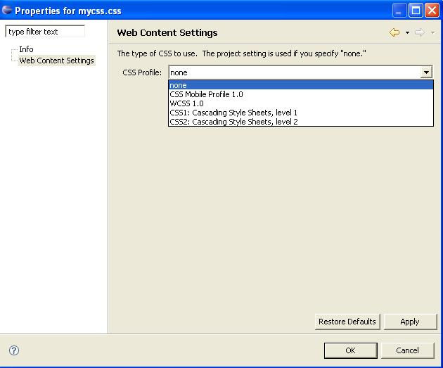
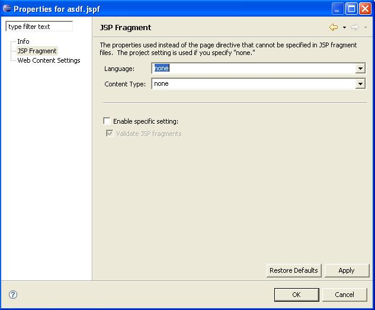
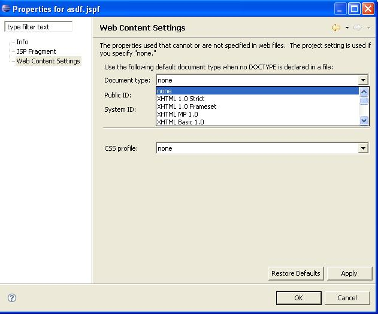
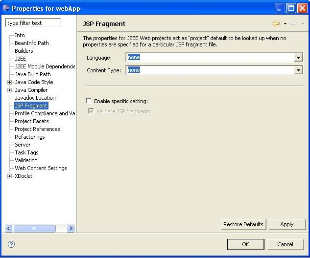
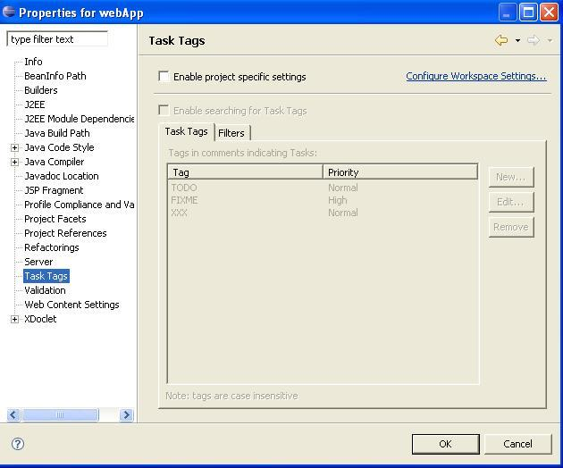
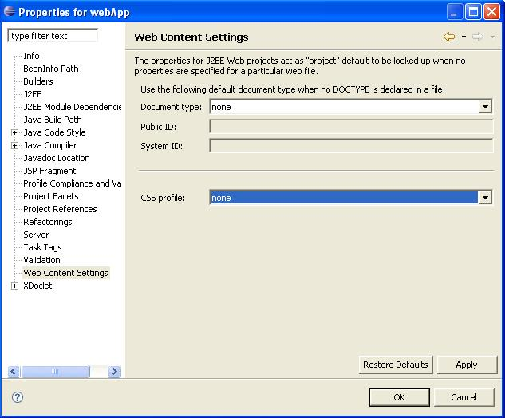

SSE Property Pages
Prerequisites:
- Open the J2EE Perspective if it is not already
open.(Window ->Open Perspective -> J2EE)
- Create a new dynamic web project if it does not already
exist. (File ->New ->Dynamic Web Project)
- Create a CSS file if it does not already exist (File
->New ->Other ->Web ->CSS)
- Create a JSPF file if it does not already exist (File
->New ->Other ->Web ->JSP) *Make sure to use *.jspf
extension.
Steps:
- Press mouse button 2 on the css file in the Project
Explorer or Navigator and select Properties.
- Verify "Web Content Settings" in the list of properties
on the left side of the Properties dialog is translated.
- Click on Web Content Settings and verify the Web Content
Settings Property page (including the CSS Profile dropdown list)

- Press the Cancel button to exit the dialog.
- Press mouse button 2 on the jspf file in the Project
Explorer or Navigator and select Properties.
- Verify "JSP Fragment" in the list of properties on the
left side of the Properties dialog is translated.
- Click on JSP Fragment and verify the JSP Fragment
Property page (items in dropdown lists are not translated-no need
to verify)

- Verify "Web Content Settings" in the list of properties
on the left side of the Properties dialog is translated.
- Click on Web Content Settings and verify the Web Content
Settings Property page (including the Document Type and CSS
Profile dropdown list)

- Press the Cancel button to exit the dialog.
- Press mouse button 2 on the web project in the Project
Explorer or Navigator and select Properties.
- Verify "JSP Fragment" in the list of properties on the
left side of the Properties dialog is translated.
- Click on JSP Fragment and verify the JSP Fragment
Property page (items in dropdown lists are not translated-no need
to verify)

- Verify "Task Tags" in the list of properties on the left
side of the Properties dialog is translated.
- Click on Task Tags and verify the Task Tags Property page

- Verify "Web Content Settings" in the list of properties
on the left side of the Properties dialog is translated.
- Click on Web Content Settings and verify the Web Content
Settings Property page (including the Document Type and CSS
Profile dropdown list)

- Press the Cancel button to exit the dialog.